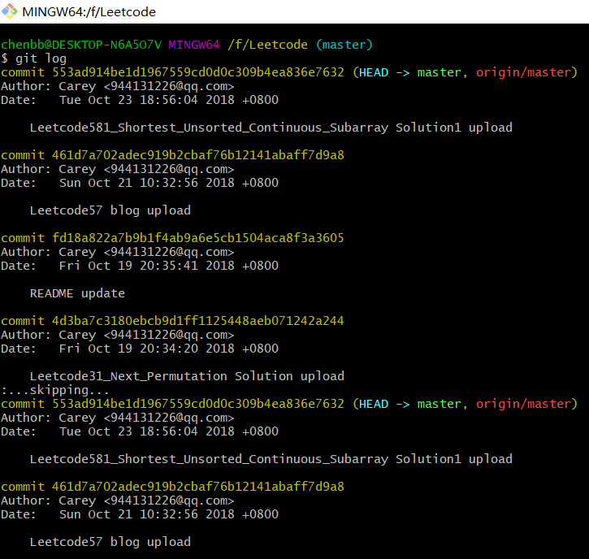

[TOC]
1.Git remote 修改 origin 源
- 查看当前remote配置：
git remote -v- 删除原来git remote源：
git remote remove origin- 添加新的 origin 源：
git remote add origin [YOUR_NEW_GIT_URL]2.Git 查看提交记录日志
- 查看log命令：
git log- 效果：

- 退出git log，键盘按q键即可。
3.Git 回退到某个commit
- 查看历史commit记录
git log查看要回退commit版本的commit_id
Git Bash命令：
git reset --hard [commit_id]
git push origin HEAD --force